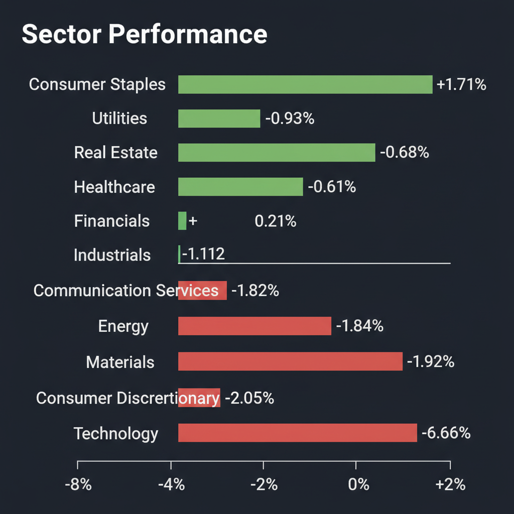
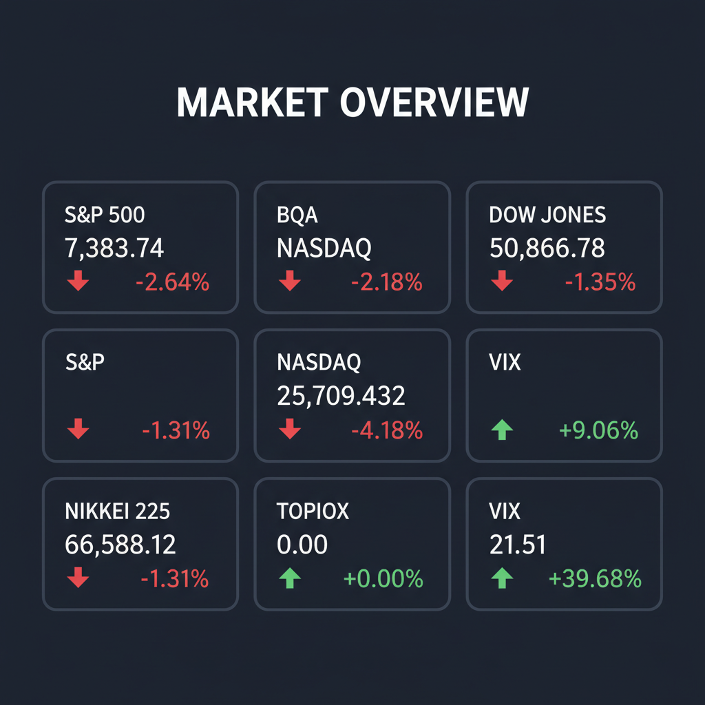

投資チームミーティングの結論に基づき、最終レポートを作成いたしました。
各エージェントがWeb調査結果を踏まえて独立に10段階評価した結果です。平均7以上=強気、4〜6.9=中立、4未満=弱気。
| 銘柄 | ファンダメンタルズアナリスト | テンバガーハンター | マクロエコノミスト | テクニカルストラテジスト | リスクマネージャー | 平均 | 判定 |
| 6481.T | 7 好決算とAI需要、成長性期待 | 7 AI需要で業績回復、調整局面は買い場 | 7 AI需要と構造改革で業績回復期待 | 7 AI需要と堅調な業績、押し目狙い | 6 業績堅調だが株価は調整局面 |
6.8 | 中立 |
| MOBX | 1 財務リスク高く、投資不適格 | 1 財務リスク極めて高く、投資不適格 | 1 財務リスク高く、事業実態に懸念 | 1 財務リスク極めて高く、投資不適格 | 1 財務リスク極めて高く投資不適格 |
1 | 弱気 |
エージェントが推奨した中小型株について、Google検索で最新情報を調査した結果です。
THK株式会社（6481.T）に関する最新情報は以下の通りです。
1. 企業概要 THK株式会社は、世界で初めて直線運動案内（LMガイド）を開発・製品化した大手機械要素部品メーカーです。LMガイドは世界シェアトップ、ボールねじは世界第2位のポジションを占めています。主な事業内容として、工作機械、産業用ロボット、半導体製造装置、免震・制震装置などに使われる機械要素部品の製造・販売を手掛けています。また、製造業向けIoTサービス「OMNIedge」や次世代リニア搬送システム、医療・福祉機器への事業領域拡大にも注力しています。2025年12月期より輸送機器事業は非継続事業に分類されています。 時価総額は、2026年6月5日時点で約9,062億円です。
2. 直近の業績・決算情報 2026年5月11日に発表された2026年12月期第1四半期（1-3月）の連結決算では、大幅な増収増益を達成しました。 * 売上収益: 690億円（前年同期比27.4%増） * 営業利益: 76億円（前年同期比364.4%増） * 親会社の所有者に帰属する四半期利益: 44億円（前年同期比14倍増） エレクトロニクス関連需要の回復や中国市場の好調が寄与し、全セグメントで増収となりました。 通期の業績見通しについても、2026年12月期通期の連結最終利益予想を従来の215億円の黒字から227億円の黒字へ5.6％上方修正しています。
3. 最新ニュース・材料 直近では、5月下旬に複数の証券会社がTHKに対する目標株価を引き上げ、レーティングを上方修正（中立または強気を継続）したことが報じられました。これは、半導体関連需要の回復期待に加え、同社が進める事業構造改革の進展が評価されたものとみられます。
4. アナリスト評価・目標株価 2026年6月6日時点のTHKに対するアナリストのコンセンサス評価は「買い」で、平均目標株価は6,995円です。 個別の証券会社による目標株価では、5月27日に米系大手証券が強気（買い）を継続しつつ目標株価を8,300円に引き上げ、翌28日には別の米系大手証券がレーティングを弱気（売り）から中立（中立）へ引き上げ、目標株価も7,500円に大幅に上方修正しました。また、5月26日には日系大手証券が目標株価を9,300円に引き上げています。これらの新たな目標株価はいずれも、5月26日時点のアナリストコンセンサス7,199円を上回る水準です。
5. リスク要因 * 競合: 機械要素部品業界では、日本精工（6471）、日本トムソン（6480）、ファナック（6954）などが競合として挙げられます。 * 財務上の懸念: 2025年12月期には親会社の所有者に帰属する当期利益が698億円の赤字となりましたが、これは輸送機器事業の非継続事業分類の影響も含まれる可能性があります。ただし、自己資本比率は55.3%と比較的に健全な水準です。 * 事業構造改革: 2026年に自動車部品事業を投資ファンドへ売却する計画があり、事業ポートフォリオの変更に伴う短期的な影響や費用発生が考えられます。 * 需要回復の持続性: アナリスト評価が中立と強気で分かれるなど、半導体関連需要などの回復が持続するかについては、依然として見方の幅があります。
6. 株価の最近の動き THKの株価は直近で高値圏での往来が見られます。2026年5月29日の終値7,640円から6月5日の終値7,609円で推移し、6月3日には前日比+5.97%の7,929円まで上昇する局面もありました。しかし、6月5日には-2.54%と値幅が出る動きも観測されています。直近3ヶ月の騰落率は35.5%であり、上昇トレンドにあると言えます。年初来高値は2026年6月3日の8,037.0円です。
MOBXに関する最新の投資判断に必要な情報を以下にまとめます。
1. 企業概要 Mobix Labs, Inc.（MOBX）は、5Gインフラ、衛星通信、eモビリティ、ヘルスケア、インフラ、航空宇宙、防衛などの幅広い市場向けに、製品と関連ソリューションを提供する半導体企業です。高度な無線・有線接続、無線周波数（RF）、スイッチング、電磁干渉フィルタリング技術向けのコンポーネントおよびシステムを設計・開発・販売しています。 2026年5月26日時点の時価総額は3,446.5万ドルです。 同社は半導体業界に属し、特にコネクティビティ半導体に注力しています。 最近では米軍用ドローンメーカーであるVision Aerialの買収計画を発表し、ドローン製造市場へ事業を拡大する動きを見せています。
2. 直近の業績・決算情報 2026年第2四半期（3月31日締め）の決算では、売上高が97.0万ドルで前年比61%減、営業赤字が609万ドル、1株あたり損失（EPS）はマイナス0.59ドルとなりました。 2026年3月期の決算では、売上高は減益、営業利益は増収となりましたが、経常利益および純利益は減益となっています。 売上高は前年比で堅調だったと報告されていますが、具体的な数値は開示されておらず、純利益やEPSに関する詳細も不明なため、財務データから変動性を判断することは難しい状況です。
3. 最新ニュース・材料（直近1-2週間） * 2026年6月4日: 米軍用ドローンメーカーのVision Aerial社の買収に向けた拘束力のある意向表明書（LOI）に署名したと発表しました。この買収は、Mobix LabsのM&A主導の成長戦略の一環であり、米国の規制強化により加速する国産ドローンプラットフォームの需要を取り込むことを目指しています。この発表を受け、株価は急騰しました。 * 2026年5月19日: 400万ドルの転換社債を消却したと報じられました。 * 2026年5月14日: シニア担保付転換社債の修正およびLeviston Resourcesとの投資家権利契約締結を発表しました。 * Nasdaqコンプライアンス回復: 1ドル以上の最低入札要件を満たし、Nasdaqのコンプライアンスを回復しました。
4. アナリスト評価・目標株価 みんかぶの評価によると、2026年6月2日時点の目標株価は1.02ドルで「売り」とされています。 また、AI株価診断では「割高」と評価されています。 MarketBeatによると、2026年6月6日時点でのMOBXの現在の目標株価は0.00ドルです。 一方、一部の情報源ではアナリスト評価のデータがないとされています。
5. リスク要因 * 財務上の懸念: InvestingProの分析では、Mobix Labsは現金の消費が速く、短期債務が流動資産を上回っていると指摘されています。 ROE（自己資本利益率）も低下傾向にあり、資本効率の悪化を示唆しています。 * 株価の長期的な圧力: 最近の買収ニュースによる株価上昇があったものの、長期的には株価が大きな圧力にさらされている状況です。 * 競合と規制: 半導体およびドローン市場における激しい競争があります。特にドローン市場では、特定の外国製システムに対する連邦政府の規制が国産ドローンの需要を加速させており、これは機会であると同時に、製品開発や規制遵守におけるリスクにもなり得ます。
6. 株価の最近の動き 過去1年間で株価は63.44%下落しています。 直近1週間では24.06%上昇しましたが、直近1ヶ月では-2.11%の下落を記録しています。 2026年6月4日のドローンメーカー買収合意のニュースを受けて株価は急騰しましたが、その後は下落も見られます。 2026年6月6日時点のMOBXの価格は2.34米ドルで、過去24時間で-3.33%下落しています。 移動平均線を見ると、5日線は反落（-4.68%）、25日線は下降（-3.47%）、75日線は上昇（-37.11%）、200日線は下降（-57.02%）のトレンドを示しています。